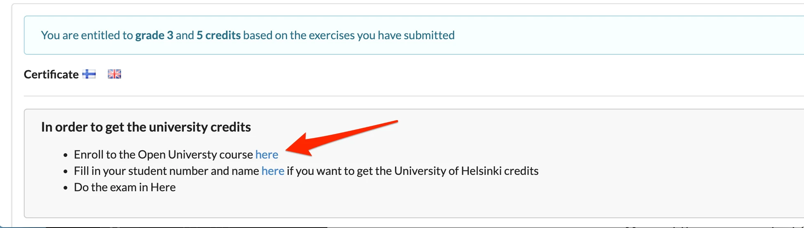
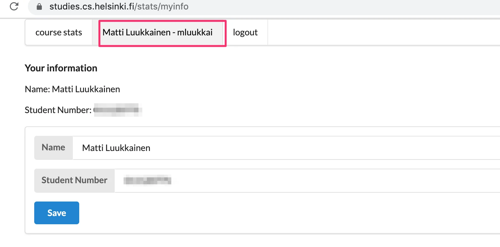
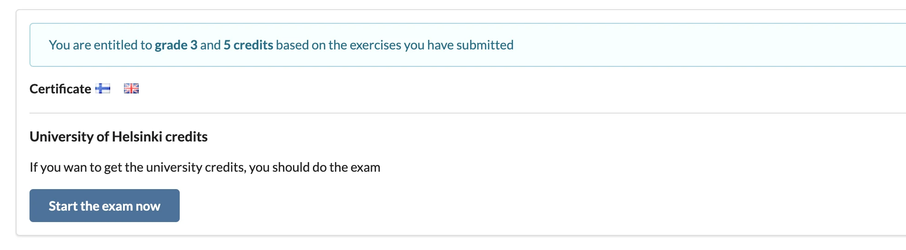
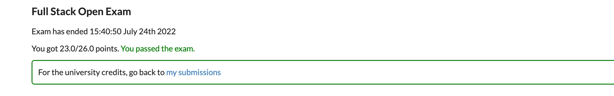
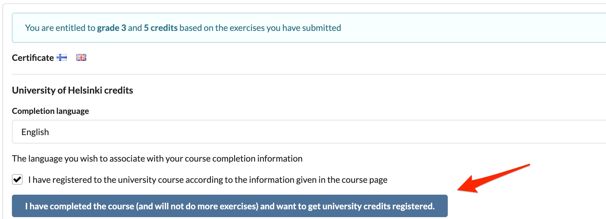
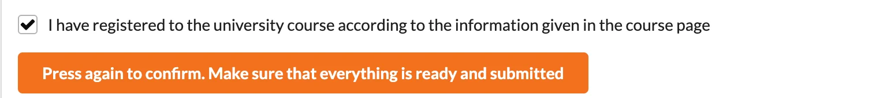

معلومات عامة
هذه الدورة مقدمة إلى تطوير الويب الحديث باستخدام JavaScript. والتركيز الأساسي على التطبيقات أحادية الصفحة المبنية بـ React والداعمة لها عبر خدمات ويب RESTful وGraphQL المبنية بـ Node.js. وتتضمن الدورة أيضاً أجزاءً عن TypeScript وReact Native والتكامل المستمر.
ومن الموضوعات الأخرى تصحيح أخطاء التطبيقات، وتقنية الحاويات، والتهيئة، وإدارة بيئات التشغيل، وقواعد البيانات.
الدورة مجانية بالكامل. يمكنك الحصول على شهادة، بل وحتى على وحدات جامعة هلسنكي وفق نظام ECTS (نظام تحويل وتجميع الوحدات الدراسية الأوروبي) مجاناً.
المتطلبات المسبقة
يُتوقَّع من المشاركين امتلاك مهارات برمجية جيدة، ومعرفة أساسية ببرمجة الويب وقواعد البيانات، وإلمام بأساسيات نظام التحكم بالإصدارات Git. ويُتوقَّع منك أيضاً أن تتحلى بالمثابرة والقدرة على حل المشكلات والبحث عن المعلومات بشكل مستقل.
لا يُشترط وجود معرفة مسبقة بـ JavaScript أو بغيرها من موضوعات الدورة.
كم من خبرة البرمجة نحتاج؟ من الصعب تحديد ذلك، لكن ينبغي أن تكون على درجة عالية من الطلاقة في لغتك البرمجية. وتتطلب هذه الدرجة من الطلاقة عادةً ما لا يقل عن 100-200 ساعة من التدريب.
مادة الدورة
المقصود أن تُقرأ مادة الدورة جزءاً واحداً في كل مرة وبالترتيب.
تحتوي المادة على تمارين موضوعة بحيث توفر المادة السابقة معلومات كافية لحل كل تمرين. يمكنك إنجاز التمارين حالما تصادفها في المادة، لكن قد يكون من المفيد أيضاً قراءة كامل مادة الجزء قبل البدء بالتمارين.
في أجزاء كثيرة من الدورة، تبني التمارين تطبيقاً أكبر واحداً قطعة صغيرة تلو الأخرى. وتُطوَّر بعض تطبيقات التمارين عبر عدة أجزاء.
تستند مادة الدورة إلى تطبيقات مثال تتوسع تدريجياً وتتغير من جزء إلى آخر. من الأفضل متابعة الشيفرة خطوة بخطوة مع إجراء تعديلات صغيرة بنفسك. يمكن العثور على شيفرة تطبيقات المثال لكل خطوة في كل جزء على GitHub.
متابعة الدورة
تتضمن الدورة أربعة عشر جزءاً، أولها مرقّم بـ 0 اتساقاً مع النسخ السابقة. ويقابل الجزء الواحد تقريباً أسبوع دراسة (بمعدل 15-20 ساعة)، لكن سرعة إكمال الدورة مرنة.
ليس من المنطقي الانتقال من الجزء n إلى الجزء n+1 قبل اكتساب معرفة كافية بموضوعات الجزء n. ومن الناحية التربوية، تعتمد الدورة أسلوب التعلم التمكني، ولا يُقصد بك الانتقال إلى الجزء التالي إلا بعد إنجاز عدد كافٍ من تمارين الجزء السابق.
في الأجزاء 1-4 يُتوقَّع منك إنجاز جميع التمارين التي لا تحمل علامة النجمة (*) على الأقل. تُحتسب التمارين المعلّمة بنجمة ضمن تقديرك النهائي، لكن تخطيها لا يمنعك من إنجاز التمارين الإلزامية في الأجزاء التالية. ولا تحتوي الأجزاء 5-13 على تمارين معلّمة بنجمة لعدم وجود اعتماد مشابه على الأجزاء السابقة.
سرعة إكمال الدورة مرنة.
يمكن الاطلاع على إحصاءات زمن إنجاز التمارين عبر نظام التسليم.
قناة الدورة على Discord
يمكنك مناقشة الدورة والموضوعات المتعلقة بها في مجموعتنا المخصصة على Discord https://study.cs.helsinki.fi/discord/join/fullstack. ويضم Discord قناتي fullstack_general والقنوات الخاصة بكل جزء (أسماء القنوات التي تبدأ بـ fullstack) للنقاش المتعلق بالدورة. لاحظ أن قناة الدردشة في Discord ليست مناسبة للنقاشات المتعلقة بالدورة. انضم إلى المحادثة!
كيف تحصل على المساعدة في Discord
عندما تطلب المساعدة بشأن مشكلة في مجموعة Discord، ينبغي أن يكون سؤالك غنياً بالمعلومات ودقيقاً قدر الإمكان. إذا كان سؤالك هكذا
إضافة شخص جديد لا تعمل، هل يمكنكم مساعدتي في ذلك؟
فمن المرجح جداً ألا يجيب أحد. فقد يكون الخطأ في أي مكان.
قد يكون السؤال الأفضل هكذا
- في التمرين 2.15، عندما أحاول إضافة شخص جديد إلى التطبيق، يستجيب الخادم بالرمز 403 رغم أن الطلب يبدو سليماً في نظري.
تبدو الشيفرة هكذا
// الجزء ذو الصلة من الشيفرة ملصوق هنا // ينبغي أن تحتوي الشيفرة على عدة عبارات console.log للمساعدة في تصحيح الأخطاءوتُطبع العبارات التالية في وحدة التحكم
// البيانات المطبوعة في وحدة التحكمويبدو تبويب الشبكة هكذا*
[لقطة شاشة من وحدة تحكم الشبكة]
يمكن العثور على كل الشيفرة هنا (رابط إلى GitHub)
الأجزاء والإكمال
تتكون دراسات Full Stack من الدورة الأساسية وعدة امتدادات. ويمكنك إكمال الدراسات بما يعادل 5 إلى 15 وحدة دراسية.
الأجزاء 0-5 (الدورة الأساسية) - Full Stack Web Development (5 وحدات دراسية، CSM141081)
يعتمد عدد الوحدات وتقدير الدورة على العدد الإجمالي للتمارين المسلَّمة في الأجزاء 0-5 (بما في ذلك التمارين المعلّمة بنجمة).
تُحسب الوحدات والتقديرات كما يلي:
| التمارين | الوحدات الدراسية | التقدير |
|---|---|---|
| 116 | 5 | 5 |
| 105 | 5 | 4 |
| 94 | 5 | 3 |
| 83 | 5 | 2 |
| 72 | 5 | 1 |
بمجرد إنجازك عدداً كافياً من التمارين للحصول على تقدير النجاح، يمكنك تنزيل شهادة الدورة من نظام التسليم.
إذا رغبت في الحصول على وحدات جامعية، فعليك أداء اختبار الدورة. ولا يُحتسب الاختبار ضمن تقديرك النهائي، لكن يجب اجتيازه. مزيد من المعلومات عن الاختبار هنا.
لا يمكنك أداء الاختبار إلا بعد تسليم تمارين كافية لخمس وحدات. وليس من الحكمة عملياً أداء الاختبار فور تسليم العدد الحاسم من التمارين. والاختبار نفسه لجميع الوحدات من 5 إلى 15 ولا يُحتسب ضمن تقديرك.
لا تحتاج إلى أداء اختبار الدورة أو التسجيل في دورة الجامعة المفتوحة للحصول على شهادة الدورة.
الجزء 6 - Full Stack Web Development: إدارة الحالة (وحدة دراسية واحدة، CSM141082)
نُقلت مادة الجزء 6 إلى https://courses.mooc.fi/org/uh-cs/courses/full-stack-open-state-management.
الجزء 7 - Full Stack Web Development: الامتداد (وحدة دراسية واحدة، CSM141083)
نُقلت مادة الجزء 7 إلى https://courses.mooc.fi/org/uh-cs/courses/full-stack-open-extension.
الجزء 8 - Full Stack Web Development: GraphQL (وحدة دراسية واحدة، CSM14113)
نُقلت مادة الجزء 8 إلى https://courses.mooc.fi/org/uh-cs/courses/full-stack-open-graphql.
الجزء 9 - Full Stack Web Development: TypeScript (وحدة دراسية واحدة، CSM14110)
نُقلت مادة الجزء 9 إلى https://courses.mooc.fi/org/uh-cs/courses/full-stack-open-typescript.
الجزء 10 - Full Stack Web Development: React Native (وحدتان دراسيتان، CSM14111)
نُقلت مادة الجزء 10 إلى https://courses.mooc.fi/org/uh-cs/courses/full-stack-open-react-native
الجزء 11 - Full Stack Web Development: التكامل المستمر / التسليم المستمر (وحدة دراسية واحدة، CSM14112)
نُقلت مادة الجزء 11 إلى https://courses.mooc.fi/org/uh-cs/courses/full-stack-open-continuous-integration. وكل التفاصيل العملية مشروحة هناك.
الجزء 12 - Full Stack Web Development: الحاويات (وحدة دراسية واحدة، CSM141084)
نُقلت مادة الجزء 12 إلى https://courses.mooc.fi/org/uh-cs/courses/full-stack-open-containers. وكل التفاصيل العملية مشروحة هناك.
الجزء 13 - Full Stack Web Development: قواعد البيانات العلائقية (وحدة دراسية واحدة، CSM14114)
نُقلت مادة الجزء 13 إلى https://courses.mooc.fi/org/uh-cs/courses/full-stack-open-relational-databases. وكل التفاصيل العملية مشروحة هناك.
الجزء 14 - Full Stack Web Development: Next.js
المادة على العنوان https://courses.mooc.fi/org/uh-cs/courses/full-stack-open-nextjs
دراسة الدورة باختصار
كيف تدرس الدورة – تعليمات مختصرة: الدورة الأساسية 5 وحدات CSM141081
- أنجز التمارين. تُسلَّم التمارين عبر GitHub وتُعلَّم كمنجزة في نظام التسليم.
- شهادة الدورة ستكون متاحة في نظام التسليم.
- إذا أردت الحصول على وحدات جامعة هلسنكي
- سجّل في الدورة. ستحصل على رابط التسجيل عبر نظام التسليم بمجرد إنجازك عدداً كافياً من التمارين. اقرأ المزيد هنا
- احفظ رقم طالبك. بعد التسجيل في الدورة، احفظ رقم هويتك الطلابية في جامعة هلسنكي في نظام التسليم.
- أدِّ الاختبار عبر الإنترنت في نظام التسليم. اقرأ المزيد هنا
- علّم الدورة كمكتملة في نظام التسليم. اقرأ المزيد هنا
كيف تدرس الدورة – تعليمات مختصرة: الأجزاء 6-14
كل التفاصيل العملية مشروحة في صفحات الدورات الجديدة
تسليم التمارين
تُسلَّم التمارين عبر GitHub وتُعلَّم كمنجزة في تبويب «تسليماتي» (my submissions) في تطبيق التسليم.
إذا كنت تسلّم تمارين من أجزاء مختلفة إلى المستودع نفسه، فاستخدم نظاماً مناسباً لتسمية مجلداتك. ويمكنك بالطبع إنشاء مستودع جديد لكل جزء. وإذا كنت تستخدم مستودعاً خاصاً، فأضف mluukkai كمتعاون.
تُسلَّم التمارين جزءاً واحداً في كل مرة. وستحدد عدد التمارين التي أنجزتها من تلك الوحدة. وبمجرد تسليمك تمارين جزء ما، لن تتمكن من تسليم أي تمارين إضافية لذلك الجزء.
يُستخدم نظام لكشف الانتحال لفحص التمارين المسلَّمة إلى GitHub. وإذا وُجدت شيفرة من إجابات نموذجية أو سلّم عدة طلاب الشيفرة نفسها، فتُعالَج الحالة وفق سياسة الانتحال في جامعة هلسنكي.
تبني كثير من التمارين تطبيقاً أكبر شيئاً فشيئاً. وفي هذه الحالات يكفي تسليم التطبيق المكتمل فقط. يمكنك إجراء commit بعد كل تمرين، لكن ذلك ليس إلزامياً.
اختبار الدورة
للحصول على وحدات الجامعة الرسمية، عليك اجتياز اختبار الدورة الذي يغطي الأجزاء 1-5 من الدورة
- إذا رسبت في الاختبار، يمكنك إعادته بعد أسبوع واحد
- يمكنك مواصلة التسليم بعد الاختبار
يُؤدّى الاختبار في نظام تسليم التمارين. اتبع التعليمات أدناه لإكمال الاختبار.
- سجّل في الدورة عبر الجامعة المفتوحة.
- ستحصل على رابط التسجيل عبر نظام التسليم بمجرد إنجازك عدداً كافياً من التمارين.

بعد التسجيل في الدورة، احفظ رقم طالبك في جامعة هلسنكي في نظام التسليم:

راجع هذا للحصول على معلومات حول كيفية العثور على رقم طالبك.
بعد هذه الخطوات، يمكنك أداء اختبار الدورة في نظام التسليم:

سيكون لديك 120 دقيقة لإكمال الاختبار. وإذا سار كل شيء على ما يرام، فسترى التأكيد التالي:

إذا رسبت، فعليك الانتظار أسبوعاً واحداً لمحاولة الاختبار مجدداً.
إذا اجتزت الاختبار ولم تكن تنوي إنجاز مزيد من التمارين، يمكنك العودة إلى تبويب «تسليماتي» وطلب الوحدات:

تذكّر أن تضغط الزر الأزرق الكبير لطلب تسجيل الوحدات.
لاحظ أنه يجب الضغط على الزر مرتين:

عند الضغط مرتين، سترى النص التالي
تسجيل وحدات الجامعة قيد التنفيذ...
كيف تحصل على وحداتك
إذا أردت الحصول على وحدات جامعة هلسنكي، فاحفظ رقم طالبك في جامعة هلسنكي في نظام تسليم التمارين
إذا لم تكن طالباً في جامعة هلسنكي، يمكنك الحصول على رقم طالب عبر التسجيل في الدورة من خلال الجامعة المفتوحة، وراجع هذا لمزيد من المعلومات.
ستحصل على وحداتك بعد تسليم تمارين كافية لتقدير النجاح، واجتياز الاختبار، ثم إبلاغنا عبر نظام تسليم التمارين بأنك أكملت الدورة:
تذكّر أن تضغط الزر الأزرق الكبير لطلب تسجيل الوحدات.
لاحظ أنه يجب الضغط على الزر مرتين:
عند الضغط مرتين، سترى النص التالي
تسجيل وحدات الجامعة قيد التنفيذ...
يرجى ملاحظة أن الحصول على وحدات الجامعة يتطلب تسجيلاً لكل جزء مكتمل. راجع مزيداً من المعلومات حول التسجيل.
يمكنك الاطلاع على تقديرك في Sisu التابع لجامعة هلسنكي وOpintopolku بعد نحو أربعة أسابيع من إبلاغنا.
عند اكتمال التسجيل، يظهر النص التالي في نظام التسليم
سُجّلت وحدات الجامعة، راجع صفحة الدورة لمعرفة كيفية الحصول على كشف درجات إن احتجت إليه
من أين أحصل على رقم طالبي في جامعة هلسنكي
عند تسجيلك في دورة لأول مرة عبر الجامعة المفتوحة، سيُنشأ لك رقم طالب في جامعة هلسنكي تلقائياً. *تأكد من أنك سجّلت في الدورة قبل أن تحاول معرفة رقم طالبك. *
لاحظ أيضاً أنك لا تحتاج إلى التسجيل في الجامعة المفتوحة للحصول على شهادة الدورة!
يمكنك معرفة رقم طالبك عبر أحد الخيارات التالية:
أ) Sisu
إذا كان لديك حساب مستخدم في جامعة هلسنكي، فيمكنك العثور على رقم طالبك من ملفك الشخصي في نظام معلومات الدراسة Sisu التابع لجامعة هلسنكي:
- سجّل الدخول إلى Sisu باسم المستخدم وكلمة المرور الخاصين بجامعة هلسنكي.
- اختر: ملفي الشخصي
- اختر: المعلومات الشخصية
ب) رسالة تأكيد التسجيل
بعد التسجيل في الدورة، ستتلقى رسالة بريد إلكتروني للتأكيد على عنوان البريد الإلكتروني الذي أدخلته في نموذج التسجيل. وتحتوي هذه الرسالة إما على رقم طالبك مباشرة أو على رابط ينقلك إلى صفحة تعرض رقم طالبك في جامعة هلسنكي.
ج) التواصل مع خدمات الطلاب
إذا واجهت صعوبة في العثور على رقم طالبك بالوسائل المذكورة أعلاه، فيمكنك إرسال بريد إلكتروني إلى خدمات الطلاب في جامعة هلسنكي. تأكد من أنك سجّلت في الدورة عبر الجامعة المفتوحة قبل إرسال البريد الإلكتروني!
ضمّن في بريدك الإلكتروني المعلومات التالية
- اسم الدورة التي سجّلت فيها،
- اسمك
- تاريخ ميلادك.
البريد الإلكتروني لخدمات الطلاب: avoin-student@helsinki.fi
تذكير أخير: تأكد من أنك سجّلت في الدورة عبر الجامعة المفتوحة قبل إرسال البريد الإلكتروني
شهادة الدورة
حتى إذا لم تسجّل في الجامعة المفتوحة من أجل الاختبار والوحدات، فلا يزال بإمكانك تنزيل شهادة الدورة من تبويب «تسليماتي» في نظام التسليم بمجرد إنجازك عدداً كافياً من التمارين لتقدير النجاح.
توجد شهادة واحدة للأجزاء الأساسية (0-7) من الدورة، وبعدها شهادة منفصلة لكل جزء من أجزاء الدورة.
طلب كشف درجات
يمكنك طلب كشف درجات موثّق بعد تسجيل وحدات جامعتك. ويمكنك طلب كشف الدرجات باستخدام النموذج الإلكتروني لخدمات الطلاب.
سيُرسَل إليك كشف درجات إلكتروني عبر البريد الإلكتروني. اعرض هذه الوثيقة على مؤسستك لإدراج الوحدات في شهادتك. وتتخذ مؤسستك الأم قرار إدراج الوحدات.
لا إصدارات سنوية بعد الآن
لا توجد «إصدارات سنوية» للدورة، فهي متاحة طوال الوقت. ويُحدَّث كل جزء مرة أو مرتين سنوياً. والتحديثات غالباً بسيطة: تُحدَّث إصدارات المكتبات ويُحسَّن وضوح النص. ومع ذلك، قد توجد أيضاً بعض التغييرات الأكبر.
ورغم التغييرات تبقى جميع التمارين المسلَّمة صالحة، ويمكن متابعة الدورة دون القلق بشأن التحديثات. كذلك ستبقى سياسة الحصول على الشهادات ووحدات الجامعة وغيرها كما هي مهما حدث.
أبرز التغييرات الأخيرة
- الجزء 14 (25 أبريل 2026): إضافة جزء جديد
- الجزء 10 (21 أبريل 2026): تحديث إصدار Expo والمكتبات
- الجزء 7 (5 أبريل 2026): استُبدل Webpack بـ esbuild، وتغطية حدود الأخطاء وإبقاء الواجهة الأمامية والخلفية في مستودع واحد
- الجزء 6 (5 أبريل 2026): استُبدل Redux بـ Zustand
- الجزء 5 (31 مارس 2026): نُقل React Router ومكتبات التنسيق من الجزء 7 إلى هذا الجزء
- الأجزاء 9 و11-13 (مارس 2026): تحديث المحتوى ونقل المادة إلى منصة جديدة
- الجزء 8: (3 يناير 2026) تحديث Apollo Server إلى الإصدار 5. وتحديث Apollo Client إلى الإصدار 4. ونقل إعادة هيكلة شيفرة الواجهة الخلفية إلى الجزء 8c. والكثير من التحسينات الصغيرة الأخرى.
- الجزء 4 (13 أغسطس 2025): تحديث Express إلى الإصدار 5 وإزالة مكتبة express-async-errors من الجزء 4b
التوسّع في دورة أكملتها سابقاً
إذا كنت قد درست الدورة سابقاً إما كـ MOOC أو كمقرر جامعي، فيمكنك الآن التوسّع فيها.
التوسّع في Full stack open
يمكنك ببساطة المتابعة من حيث توقفت! وإذا أردت إعادة تسليم جزء كامل، فتواصل مع فريق الدورة عبر البريد الإلكتروني أو حساب mluukkai على Discord، مع ذكر اسم المستخدم في GitHub والأجزاء التي تريد حذفها من تسليماتك.
التوسّع في نسخة جامعة هلسنكي من هذه الدورة
هذا ممكن أيضاً، ما عليك سوى التواصل مع فريق الدورة عبر البريد الإلكتروني أو حساب mluukkai على Discord.
مشروع Full stack
سيتاح مشروع Full stack بقيمة 5 أو 7 أو 10 وحدات دراسية عبر الجامعة المفتوحة.
في المشروع، يُنفَّذ تطبيق باستخدام React و/أو Node، مع إمكانية تنفيذ تطبيق جوال باستخدام React Native أيضاً.
يُحدَّد عدد الوحدات بناءً على ساعات العمل المنجزة. والوحدة الدراسية الواحدة تعادل نحو 17.5 ساعة عمل. ويُقيَّم العمل بنجاح/رسوب.
ويمكن إكمال المشروع بشكل ثنائي أو جماعي.
راجع مزيداً من المعلومات عن المشروع.
وعد المقابلة
منح شركاؤنا Terveystalo وSmartly.io وعداً بمقابلة عمل لكل من يكمل الدورة والعمل المشروع بأقصى عدد من الوحدات (15 + 10).
وهذا يعني أن الطالب يستطيع، إن اختار ذلك، التسجيل لمقابلة عمل مع الشريك الذي منح الوعد. وسيرسل مدرّس الدورة، Matti Luukkainen، التعليمات إلى الطالب بعد إكمال الدورات بأقصى عدد من الوحدات.
ويجب أن تكون مقيماً في فنلندا للمشاركة في هذه المقابلات.
قبل أن تبدأ
يُوصى باستخدام متصفح Chrome لهذه الدورة لأنه يوفر أفضل أدوات لتطوير الويب. والبديل الآخر هو إصدار المطوّر من Firefox، الذي يوفر المجموعة نفسها من الميزات.
تُسلَّم تمارين الدورة إلى GitHub، لذا يجب تثبيت Git ومعرفة كيفية استخدامه. وللاطلاع على التعليمات، راجع درس Git وGitHub للمبتدئين.
ثبّت محرر نصوص مناسباً يدعم تطوير الويب. ويُوصى بشدة بـ Visual Studio Code.
لا تكتب الشيفرة باستخدام nano أو Notepad أو Gedit. وNetBeans ليس جيداً كثيراً لتطوير الويب أيضاً، وهو ثقيل نسبياً مقارنة بـ Visual Studio Code.
ثبّت أيضاً Node.js. استخدم الإصدار 24 على الأقل. وتجد تعليمات التثبيت على موقع Node.js.
ستُثبَّت مدير حزم Node، وهو npm، تلقائياً مع Node.js. وسنستخدم npm باستمرار طوال الدورة. ويأتي Node أيضاً مع npx، الذي سنحتاجه بضع مرات.
الأخطاء المطبعية في المادة
إذا وجدت خطأً مطبعياً في المادة، أو كان شيء ما معبَّراً عنه بشكل غير واضح أو بقواعد نحوية سيئة، فأرسل pull request إلى مادة الدورة في المستودع. على سبيل المثال، يمكن العثور على الشيفرة المصدرية بصيغة markdown لهذه الصفحة في المستودع على https://github.com/fullstack-hy2020/fullstack-hy2020.github.io/edit/source/src/content/0/en/part0a.md
في أسفل كل جزء من المادة يوجد رابط اقترح تغييرات على المادة. ويمكنك تعديل الشيفرة المصدرية للصفحة بالنقر على الرابط.
توجد أيضاً روابط كثيرة في المادة لأنواع عديدة من المواد الخلفية. وإذا لاحظت أن رابطاً ما معطوب (وهذا يحدث كثيراً جداً...)، فاقترح تغييراً أو نادنا على Discord إذا لم تجد بديلاً للرابط المعطوب.